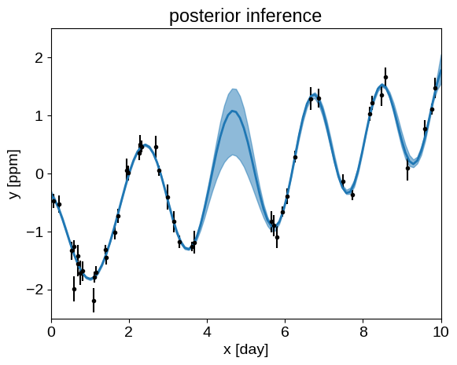

Posterior inference using numpyro¶
import numpy as np
import matplotlib.pyplot as plt
np.random.seed(42)
t = np.sort(
np.append(
np.random.uniform(0, 3.8, 28),
np.random.uniform(5.5, 10, 18),
)
)
yerr = np.random.uniform(0.08, 0.22, len(t))
y = (
0.2 * (t - 5)
+ np.sin(3 * t + 0.1 * (t - 5) ** 2)
+ yerr * np.random.randn(len(t))
)
true_t = np.linspace(0, 10, 100)
true_y = 0.2 * (true_t - 5) + np.sin(3 * true_t + 0.1 * (true_t - 5) ** 2)
plt.plot(true_t, true_y, "k", lw=1.5, alpha=0.3)
plt.errorbar(t, y, yerr=yerr, fmt=".k", capsize=0)
plt.xlabel("x [day]")
plt.ylabel("y [ppm]")
plt.xlim(0, 10)
plt.ylim(-2.5, 2.5)
_ = plt.title("simulated data")
Matplotlib is building the font cache; this may take a moment.
from jax.config import config
config.update("jax_enable_x64", True)
from jax import random
import numpyro
import numpyro.distributions as dist
from numpyro.infer import MCMC, NUTS
from tinygp import kernels, GaussianProcess
prior_sigma = 5.0
def numpyro_model(t, yerr, y=None):
mean = numpyro.sample("mean", dist.Normal(0.0, prior_sigma))
jitter = numpyro.sample("jitter", dist.HalfNormal(prior_sigma))
sigma1 = numpyro.sample("sigma1", dist.HalfNormal(prior_sigma))
rho1 = numpyro.sample("rho1", dist.HalfNormal(prior_sigma))
tau = numpyro.sample("tau", dist.HalfNormal(prior_sigma))
kernel1 = sigma1 ** 2 * kernels.ExpSquared(tau) * kernels.Cosine(rho1)
sigma2 = numpyro.sample("sigma2", dist.HalfNormal(prior_sigma))
rho2 = numpyro.sample("rho2", dist.HalfNormal(prior_sigma))
kernel2 = sigma2 ** 2 * kernels.Matern32(rho2)
kernel = kernel1 + kernel2
gp = GaussianProcess(kernel, t, diag=yerr ** 2 + jitter, mean=mean)
numpyro.sample("obs", gp.to_numpyro(), obs=y)
if y is not None:
gp.condition(y)
numpyro.deterministic("pred", gp.predict(true_t))
nuts_kernel = NUTS(numpyro_model, dense_mass=True, target_accept_prob=0.9)
mcmc = MCMC(nuts_kernel, num_warmup=1000, num_samples=1000, num_chains=2)
rng_key = random.PRNGKey(34923)
%%time
mcmc.run(rng_key, t, yerr, y=y)
samples = mcmc.get_samples()
pred = samples["pred"].block_until_ready() # Blocking to get timing right
/opt/hostedtoolcache/Python/3.9.2/x64/lib/python3.9/site-packages/numpyro/infer/mcmc.py:479: UserWarning: There are not enough devices to run parallel chains: expected 2 but got 1. Chains will be drawn sequentially. If you are running MCMC in CPU, consider to use `numpyro.set_host_device_count(2)` at the beginning of your program.
warnings.warn('There are not enough devices to run parallel chains: expected {} but got {}.'
CPU times: user 1min 2s, sys: 12.6 s, total: 1min 15s
Wall time: 48.2 s
q = np.percentile(pred, [5, 50, 95], axis=0)
plt.fill_between(true_t, q[0], q[2], color="C0", alpha=0.5)
plt.plot(true_t, q[1], color="C0", lw=2)
plt.errorbar(t, y, yerr=yerr, fmt=".k", capsize=0)
plt.xlabel("x [day]")
plt.ylabel("y [ppm]")
plt.xlim(0, 10)
plt.ylim(-2.5, 2.5)
_ = plt.title("posterior inference")

import arviz as az
data = az.from_numpyro(mcmc)
az.summary(
data, var_names=[v for v in data.posterior.data_vars if v != "pred"]
)
| mean | sd | hdi_3% | hdi_97% | mcse_mean | mcse_sd | ess_mean | ess_sd | ess_bulk | ess_tail | r_hat | |
|---|---|---|---|---|---|---|---|---|---|---|---|
| jitter | 0.005 | 0.005 | 0.000 | 0.014 | 0.000 | 0.000 | 2541.0 | 2316.0 | 1480.0 | 889.0 | 1.0 |
| mean | 0.074 | 1.531 | -2.922 | 2.883 | 0.063 | 0.060 | 582.0 | 329.0 | 780.0 | 473.0 | 1.0 |
| rho1 | 2.142 | 0.261 | 1.806 | 2.554 | 0.013 | 0.009 | 419.0 | 414.0 | 693.0 | 446.0 | 1.0 |
| rho2 | 7.664 | 3.126 | 2.169 | 13.294 | 0.078 | 0.055 | 1604.0 | 1604.0 | 1437.0 | 1267.0 | 1.0 |
| sigma1 | 0.986 | 0.465 | 0.434 | 1.736 | 0.017 | 0.013 | 740.0 | 631.0 | 1423.0 | 777.0 | 1.0 |
| sigma2 | 1.742 | 0.977 | 0.435 | 3.461 | 0.038 | 0.030 | 648.0 | 543.0 | 799.0 | 893.0 | 1.0 |
| tau | 2.500 | 1.030 | 0.946 | 4.492 | 0.038 | 0.027 | 730.0 | 730.0 | 661.0 | 678.0 | 1.0 |